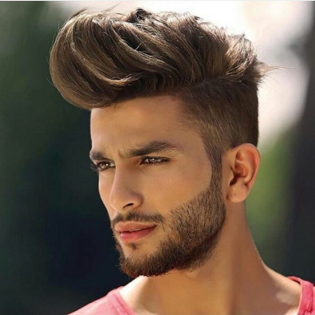

|
BarboterapiaA barboterapia é um procedimento que tem como objetivo promover o relaxamento, além de prezar pela hidratação da pele e, claro, uma barba bem feita. Ela pode durar até 40 minutos, dependendo da necessidade do cliente. |
|  |
Corte de CabeloO corte de cabelo masculino degradê - também conhecido como fade - é um dos estilos que mais faz sucesso entre os homens. Esse tipo de corte é muito popular nas barbearias e combina com qualquer tipo de cabelo. |
Alisamento de Cabelo MasculinoAntes de alisar o cabelo masculino é muito importante que você saiba o resultado que está buscando. Se você tem o cabelo cacheado e ondulado, está em busca de fios super lisos? Ou apenas definição de cachos e diminuição de frizz? É de extrema importância que você converse com o seu cabelereiro sobre qual resultado você quer ter. Assim, ele pode te indicar a melhor forma de alisar o cabelo masculino de acordo com o resultado que você deseja. |